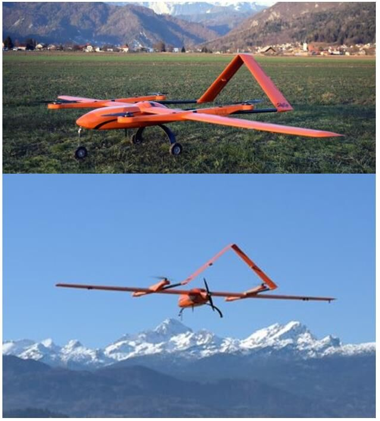
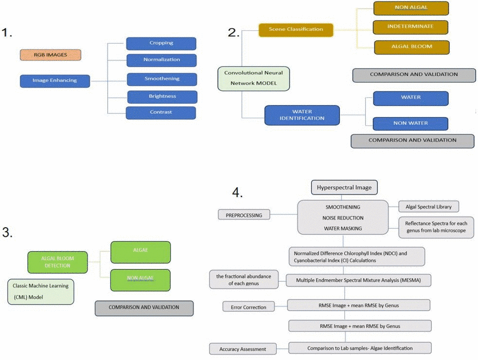
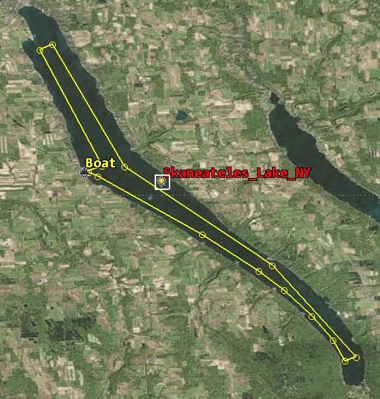
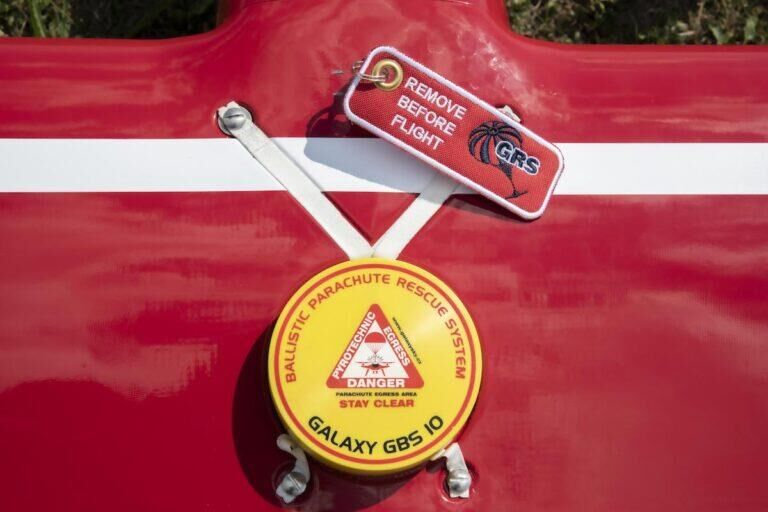
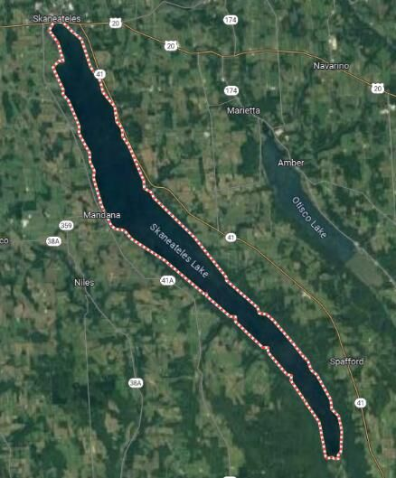
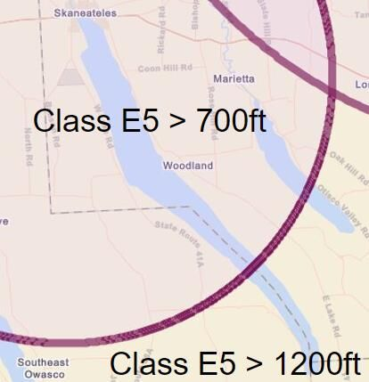
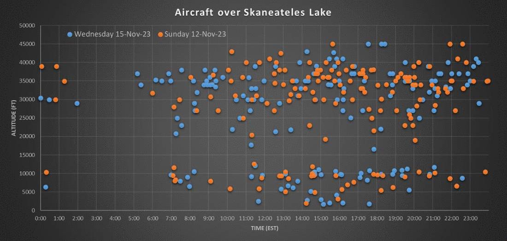
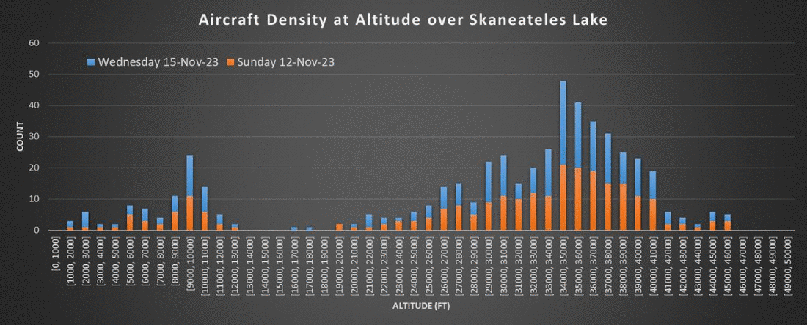
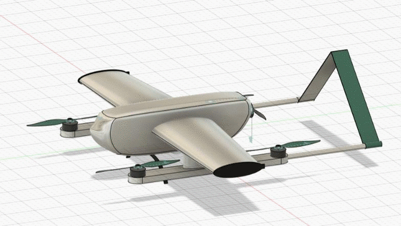
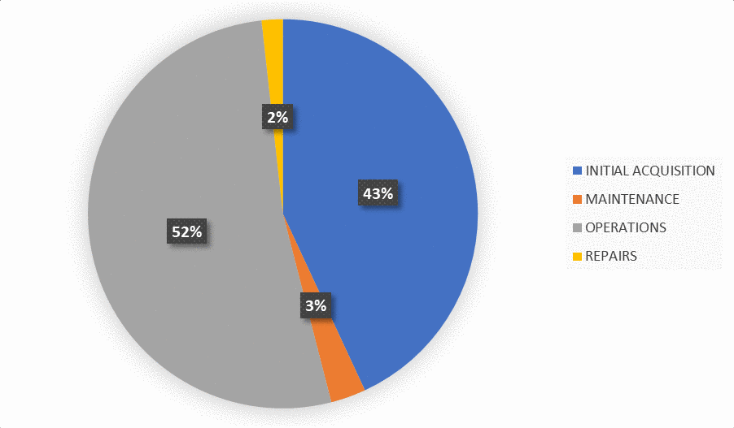

The problem
Skaneateles Lake is the primary water supply for the City of Syracuse. Harmful algae blooms have been appearing in it, and once a bloom is large enough to see from shore it is already a treatment problem.
Blooms are cyanobacteria growing fast enough to strip oxygen out of the water. They kill fish, they release toxins, and for a city drinking from the lake they mean intensive monitoring and treatment. Catching them early is worth a lot, and catching them early means looking at the whole lake often rather than sampling a few points from a boat.
The city issued a request for proposal for an unmanned aircraft system that could find and map blooms in near real time and guide a sampling boat to them. This project is the response to that RFP: pick the aircraft, design the operation around it, and produce the safety case and airspace paperwork that would let it fly.
Group project with a team of four at Carleton University.
Choosing the aircraft
Aircraft selection ran as a three-stage score. The point of splitting it was to stop a capable but non-compliant aircraft from scoring well on performance and surviving to the end.
Stage one is pass or fail. Each candidate scores 1 or 0 against the regulations the operation is bound by, with a written reason recorded next to every score so the decision stays traceable. Parachute equipped, maximum mass at or under 25 kg, no laceration risk. An aircraft failing any single line is out, regardless of how good the rest of it is.
Stage two scores what the mission needs from 3 down to 1, where 3 exceeds the requirement and 1 fails to meet it. Flight range against a 100 km target, launch and recovery compatibility, ease of transport and setup, availability of the energy source, autonomous waypoint following, and whether the hyperspectral imager comes integrated.
| Mission requirement | Design requirement |
|---|---|
| Range | At least 100 km |
| Max altitude | At least 760 m (2,500 ft) |
| Launch method | Hand launched or VTOL |
| Recovery method | Parachute or VTOL |
| Autonomy | Waypoint following |
| Energy source | High availability |
| Payload | Hyperspectral imager and optical camera |
Range and altitude both fall out of the survey track needed to cover the lake. Nowhere around the lake has room for a conventional runway, which is what forces VTOL or a hand launch with parachute recovery. Waypoint following is in there because the mission is monotonous, and a bored pilot flying the same track for three hours is a hazard the autopilot removes.
More than one aircraft cleared the first two stages, so the last stage compares the survivors directly and picks the one that sits closest to the requirements rather than furthest above them. An aircraft that beats every number by a wide margin is an aircraft the operation is paying for and not using.
The aircraft and what it carries
The selected aircraft is the ElevonX Skyeye Sierra VTOL, a hybrid multirotor and fixed-wing design. Five electric motors: four lifting rotors for vertical takeoff and landing, and one pusher for forward flight.
| Parameter | Value |
|---|---|
| Aircraft weight | 12.5 kg |
| Payload weight | 0.46 kg |
| Dimensions | 310 × 152 cm |
| Operational range | 320 km |
| Endurance | 3 hours |
| Operational footprint | 10 × 10 m |
| Link | 868 or 900 MHz, 57 kbps |
| Recovery | Parachute equipped |

The payload is a MicaSense Altum-PT, integrated by the manufacturer. Detection runs in four steps rather than one: enhance and normalise the RGB imagery, classify each frame as non-algal, indeterminate or definite bloom, extract the water area and mask out shoreline and vegetation so the surroundings stop interfering, then run a classic machine learning model over what is left and separate algae genera by spectral band against a lab-derived library.

The link budget nobody asks about
Two data links matter. The optical image downlink is mission critical, because the boat crew navigates to sampling points using it. The control uplink is safety critical, because it is what moves the aircraft if something else enters the airspace.
Skaneateles Lake sits near a lot of cell infrastructure, so the towers are a plausible interference source. Taking the nearest tower to the flight path, in Syracuse at roughly 1,500 m, and treating its signal as noise at the aircraft:
| Metric | Value |
|---|---|
| Power output | 3 kW |
| Antenna gain | 18 |
| Total loss | 1 (worst case) |
| Frequency | 900 MHz |
| Minimum range | 1,500 m |
| Noise at aircraft | 16.9 µW, −17.72 dBm |
That number on its own does not close the analysis. Whether the link survives it depends on the required signal-to-noise ratio and the transmitter power of the radio, and the manufacturer publishes neither. The honest output of this section is a question for the OEM rather than an answer.
Concept of operations
The operation is nine phases long and half of it happens on a boat.
Boat launch, aircraft takeoff, ascent, loiter, cruise and survey, loiter again, descent, landing, then boat recovery and packup. The aircraft takes off vertically from the marina while the pilot is still on land watching it, climbs to survey altitude on pre-loaded waypoints, and holds at a point offshore called the home waypoint while the pilot walks down and boards the boat.

The home waypoint is doing more work than it looks. It is a hover position offshore, chosen so the aircraft is not loitering above anyone uninvolved in the mission, and it is the place the aircraft is commanded back to when anything goes wrong. Having one defined recovery position that every contingency can reference is what keeps the emergency procedures short.
During the survey the pilot does not fly the aircraft. It follows its waypoints while the pilot monitors telemetry and a dedicated visual observer scans the airspace for traffic. When a frame comes back flagged as a bloom, the aircraft sends the GPS coordinate and a marked RGB image down to the boat, and the technician adjusts the boat route to intercept it and take a water sample.
What happens when it goes wrong
Every failure gets one defined response, and the responses escalate in a fixed order so nobody has to invent a plan mid-flight.
| Event | Response |
|---|---|
| Collision hazard | Adjust flight path clear of the intruder, drop to the Part 107 400 ft ceiling |
| Leaves flight geography | Commanded or manually flown back inside |
| Leaves contingency volume | Flown back; parachute deployed to end the mission if unresponsive |
| Partial control surface failure | Return to home point and begin emergency landing; parachute if navigation is not possible |
| Total control surface failure | Parachute deployed to end the mission |
| Loss of communication link | Crew maintains visual and monitors airspace; failsafe triggers if the aircraft exits the contingency volume |
The structure that matters here is that the parachute is not the answer to everything. It is the last item in an escalation, and the aircraft has to have failed to respond to a command before it fires. A programmed failsafe covers the case where several of these happen together, so an aircraft that has lost its link and then leaves the contingency volume comes down without waiting for a decision it cannot receive.

The safety case
This is the part of the project that took the longest and the part that decides whether any of the rest is allowed to happen.
The method is the Specific Operations Risk Assessment developed by JARUS. It works by establishing how much harm the operation could do on the ground and in the air, applying mitigations to bring both down, and landing on a Safety Assurance Integrity Level that sets how rigorously everything else has to be demonstrated. This operation came out at SAIL II.
Operational volume
The flight geography is the volume the aircraft is supposed to stay in. Around it sits the contingency volume, which is the buffer it is allowed to stray into before the emergency procedures start escalating. Here the waypoints never come within 500 ft of the shoreline, and that 500 ft line is where the contingency volume begins.

Ground risk
Intrinsic ground risk comes from how much energy the aircraft carries into an impact, so the worst-case kinetic energy is computed for both flight regimes:
| Regime | Mass | Speed | Kinetic energy |
|---|---|---|---|
| Fixed wing | 12.96 kg | 18 m/s | 2,100 J |
| Rotorcraft | 12.96 kg | 52.75 m/s | 18,031 J |
Both sit under the 34 kJ band. Combined with flying beyond visual line of sight outside a population centre, that puts the intrinsic ground risk class at 3, which is not acceptable as it stands.
Two mitigations bring it down. M1 reduces the number of people at risk: the mission runs over the middle of the lake, and only takeoff and landing happen over land, with the aircraft loitering over water in between. That argument is assessed at low robustness and takes off 1. M2 reduces the energy at impact, and it is the parachute. Because the Galaxy GBS 10 has a laboratory test report and has been accredited by a competent third-party military institution, it counts as high robustness and takes off 2. Final ground risk class 1.
Air risk
The survey runs at 2,500 ft, inside Class E5 controlled airspace, which puts the initial air risk at ARC-d and an initial generalised density rating of 4.

JARUS Annex C allows an operator to argue the generalised density rating is wrong for their specific operation, so rather than accepting the default we went and measured it. Two days of flight radar data were collected over the operational volume.


Across both days only seven aircraft came within 500 ft of the mission altitude, and every one of them was in the afternoon. Restricting the operation to mornings drops the density rating to 1 and the air risk to ARC-b. Tactical mitigations stay in place regardless: the pilot in communication with local air traffic control, published NOTAMs, and a dedicated visual observer watching for non-cooperative traffic.
The density rating is a default that the method hands you, and defaults are conservative because they have to cover everyone. Two days of publicly available tracking data turned a conservative assumption into a measured one, and moved the operation two classes. It cost nothing but the time to collect it.
Safety objectives
SAIL II brings 24 Operational Safety Objectives with it, covering everything from crew training and procedures to the design of the aircraft and how the operation deals with deteriorating weather. All 24 were evaluated against the operation as described, and each was met or exceeded at the level SAIL II requires. Adjacent airspace containment is satisfied by the escalation table in section 05.
The altitude decision
The single largest efficiency gain in the mission came from flying higher and accepting more paperwork.
The mission was first planned at 400 ft, because staying under that ceiling is what avoids most of the waivers and authorisations. Simulating it in STK showed why that does not work here. The lake is long, the swath from 400 ft is narrow, and covering the whole surface takes a track of roughly 250 km flown as a dense back-and-forth pattern. That is well beyond a single sortie and it loads the aircraft with turns.
Climbing to 2,500 ft widens the swath enough that the lake is covered by traversing it once and returning, dropping the track to about 50 km. Same coverage, a fifth of the distance, a fraction of the maneuvering, and a scan that fits comfortably inside the endurance.
| Survey altitude | Track length | Consequence |
|---|---|---|
| 400 ft | ~250 km | Minimal authorisation, impractical flight time |
| 2,500 ft | ~50 km | Single traverse, Class E5 airspace authorisation required |
The cost of that decision is the entire air risk problem in section 06. Flying at 2,500 ft is what put the operation in controlled airspace and started it at ARC-d. The trade was worth making, and the flight radar work is what paid for it.

What it costs to run
The mission is 106 days, from 1 May to 30 September, flying roughly three hours a day through bloom season. Costs were split into what it takes to stand the capability up and what it takes to keep it flying.

Acquisition is the aircraft, the camera, the water sampling kit, crew training and the registration and knowledge test fees. Running costs are dominated by salaries, followed by vehicle rental, fuel for the boat and truck, insurance, marina mooring and battery replacement. Repairs come out low on the assumption that a reliable platform selected through section 02 and a real maintenance plan keep them there, which is an assumption rather than a measurement.
At end of life the whole system, aircraft and support equipment together, is handed to the city rather than written off, since continuous maintenance through the season leaves it serviceable.
Limitations
This is a feasibility study and a paper safety case. Nothing here has flown.
The largest open item is the communications analysis in section 03. The interference figure is computed, but without the transmitter power and required signal-to-noise ratio from the manufacturer there is no way to say whether the links close at range over that lake. That is the first thing that would need answering before anyone committed to this aircraft.
The detection pipeline is specified from published literature rather than built and trained. It describes what would classify a bloom and how genera would be separated, but no model was trained on Skaneateles imagery and no detection performance is claimed.
The ground risk mitigation assessed at low robustness is the weakest part of the SORA argument. It rests on the mission being over water and people being unlikely to be there, which is reasonable for a lake in a rural county and would not survive being moved anywhere busier.
The paperwork the project produced is written to the FAA process, since the client is a US city. Moving it to Canada would mean redoing the airspace authorisation against Transport Canada rules, and privacy law near residential shoreline would need its own look. Cold weather operation would also change the endurance numbers the whole schedule depends on.